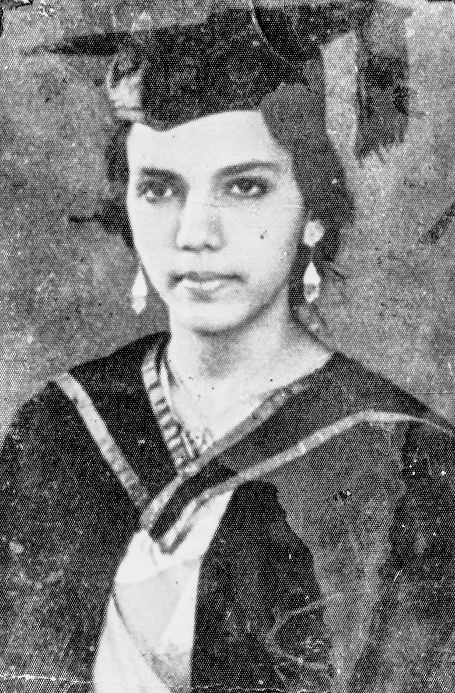

Lucy Mascarenhas

Lucy Mascarenhas at her graduation
1917 : Lucy Agne Stella Pais was born on Jan 10th.
1938 : Lucy married Dr. Francis Patrick Mascarenhas on Jan 19th, 1938 in Kodailbail Chapel, Mangalore, India.
1939 : Lucy's eldest daughter Teresa Anne was born on Dec 18th.
1941 : Lucy gave birth to Philomena on July 5th.
1948 : Lucy gave birth to Joseph Victor on July 7th.
1953 : Lucy gave birth to James on September 30th.